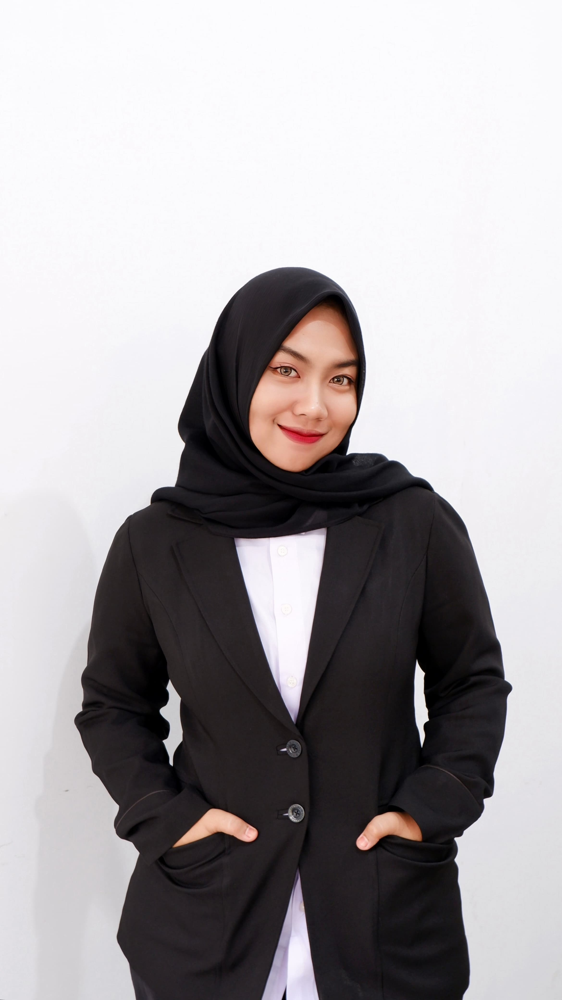

Halo, selamat datang di portofolio Dea! 🚀
Di sini, Dea berbagi berbagai proyek, pengalaman, dan karya yang telah dibuat. Dea percaya bahwa setiap tantangan adalah peluang untuk berinovasi, dan melalui portofolio ini, Dea ingin menunjukkan bagaimana teknologi dan desain dapat memberikan dampak positif. Selamat menjelajah, dan jangan ragu untuk terhubung—siapa tahu kita bisa berkolaborasi di masa depan! 😃✨
Tentang Saya
Saya Dea Zasqia Pasaribu Malau, mahasiswa Informatika di Universitas Syiah Kuala yang memiliki minat besar di dunia teknologi dan desain UI/UX. Saya selalu terinspirasi oleh bagaimana teknologi dapat memberikan solusi inovatif untuk berbagai tantangan dalam kehidupan sehari-hari. Dengan kombinasi antara pemrograman dan desain, saya berusaha menciptakan solusi yang tidak hanya fungsional tetapi juga mudah digunakan dan menarik secara visual
Selain memiliki ketertarikan di bidang pengembangan perangkat lunak, saya juga aktif mengeksplorasi dunia desain UI/UX. Saya percaya bahwa pengalaman pengguna yang baik tidak hanya ditentukan oleh fitur-fitur canggih, tetapi juga oleh bagaimana pengguna dapat berinteraksi dengan sistem secara intuitif dan nyaman.
Selama perjalanan akademik saya, saya terlibat dalam berbagai proyek, organisasi, dan kegiatan yang memperluas wawasan serta keterampilan saya. Dari mengembangkan aplikasi berbasis data hingga menjadi bagian dari tim desain kreatif, saya terus berupaya untuk berkembang dan memberikan kontribusi terbaik di setiap kesempatan.
Pengalaman Saya
Wakil Ketua Departemen Administrasi dan Inventaris - HMIF 2025
Sebagai Wakil Ketua Departemen Administrasi dan Inventaris di Himpunan Mahasiswa Informatika (HMIF) 2025, saya bertanggung jawab dalam mengelola seluruh aspek administrasi dan inventarisasi organisasi. Dalam peran ini, saya memastikan bahwa data serta aset organisasi terdokumentasi dengan baik sehingga operasional HMIF dapat berjalan lebih efisien dan terorganisir. Melalui pengalaman ini, saya mengembangkan keterampilan dalam manajemen dokumen, perencanaan strategis, serta koordinasi antaranggota, yang sangat berguna dalam dunia profesional.
Co-Director of Marketing & Communication - ShARE USK 2025
Sebagai Co-Director of Marketing & Communication di ShARE USK, saya berperan dalam merancang serta mengimplementasikan strategi komunikasi dan pemasaran organisasi. Saya bertanggung jawab dalam meningkatkan visibilitas ShARE USK melalui berbagai media digital, pengelolaan konten sosial media, serta kolaborasi dengan pihak eksternal untuk memperluas jaringan dan dampak organisasi. Pengalaman ini memberikan saya wawasan yang lebih dalam mengenai branding, strategi digital marketing, serta komunikasi publik yang efektif.
Moderator Seminar Nasional UI/UX - INFEST X 2024
Sebagai Moderator dalam Seminar Nasional UI/UX - INFEST X, saya memiliki kesempatan untuk memandu diskusi dengan para ahli di bidang desain UI/UX. Saya bertanggung jawab untuk mengarahkan jalannya seminar, menyampaikan pertanyaan yang relevan, serta memastikan interaksi yang dinamis antara pembicara dan peserta. Melalui pengalaman ini, saya semakin percaya diri dalam public speaking, moderasi acara, serta memperluas wawasan mengenai tren terkini dalam dunia desain UI/UX.
Juara 2 Olimpiade Bahasa Arab (OBA) ke-5 Tahun 2022
Mengikuti Olimpiade Bahasa Arab bukan sekadar ajang kompetisi, tapi juga kesempatan untuk mengasah pemahaman bahasa dan budaya Arab secara lebih mendalam. Berhasil meraih juara 2 di tingkat nasional menjadi pencapaian yang tidak hanya membanggakan, tetapi juga memotivasi saya untuk terus mengembangkan kemampuan dalam bahasa ini.
Juara 2 Duta Pelajar Kamtibmas Aceh Singkil Tahun 2020
Peran sebagai finalis Duta Pelajar Kamtibmas memberikan pengalaman yang luar biasa dalam mengedukasi sesama pelajar tentang pentingnya keamanan dan kedisiplinan. Lewat kompetisi ini, saya belajar bagaimana menyampaikan ide dengan jelas, membangun kesadaran sosial, serta menjadi contoh bagi lingkungan sekitar.
Juara 3 Debat Bahasa Inggris Aceh Singkil Tahun 2020
Debat bukan hanya tentang adu argumen, tetapi juga melatih cara berpikir cepat, logis, dan terstruktur. Meraih juara 3 dalam kompetisi ini memperkuat kemampuan saya dalam menyampaikan ide secara efektif, sekaligus meningkatkan kepercayaan diri dalam berbicara di depan banyak orang.
Duta Pelajar Rematri Singkil Utara Tahun 2022-2023
Menjadi Duta Pelajar Rematri adalah kesempatan untuk berperan dalam edukasi kesehatan remaja, terutama dalam isu kesehatan reproduksi dan pemberdayaan perempuan. Dalam peran ini, saya tidak hanya belajar banyak, tetapi juga berusaha membawa perubahan dengan meningkatkan kesadaran di lingkungan sekitar.
5 Besar English Contest Chinquelle Aceh Singkil Tahun 2023
Bercerita dalam bahasa Inggris bukan hanya soal kefasihan, tetapi juga soal bagaimana menyampaikan pesan dengan menarik dan penuh makna. Berhasil masuk 5 besar di kompetisi ini memberikan pengalaman baru dalam public speaking dan storytelling, sekaligus menantang saya untuk terus berkembang.
Proyek Saya

AquaFair : Platform Pembagian Air Berdasarkan Data Keluarga dan Pengaduan Daerah Kekurangan Air untuk Efisiensi Distribusi Air Tawar
AquaFair adalah platform inovatif yang dirancang untuk mengoptimalkan distribusi air bersih dengan pendekatan berbasis data. Dengan mengintegrasikan informasi kebutuhan air dari setiap keluarga serta laporan daerah yang mengalami kekurangan air, AquaFair membantu memastikan distribusi air tawar yang lebih adil, efisien, dan tepat sasaran. Sistem ini memungkinkan pemangku kepentingan, seperti pemerintah dan penyedia air, untuk mengambil keputusan yang lebih akurat dalam mendistribusikan sumber daya air secara berkelanjutan.
ShARE USK Social Media Design
Dalam proyek ini, saya bertanggung jawab untuk membuat desain visual media sosial bagi ShARE USK. Desain ini bertujuan untuk memperkuat branding organisasi serta meningkatkan keterlibatan audiens dalam berbagai kegiatan yang diadakan. Melalui proyek ini, saya semakin mengasah keterampilan dalam desain grafis, copywriting, serta strategi pemasaran digital.
EcoEnzyme+ : Solusi Pengelolaan Limbah Organik dan Edukasi Keberlanjutan untuk Komunitas
EcoEnzyme+ adalah platform yang berfokus pada pengelolaan limbah organik dan edukasi keberlanjutan bagi komunitas. Melalui EcoEnzyme+, masyarakat dapat belajar bagaimana mengolah limbah organik menjadi produk yang bermanfaat, seperti cairan pembersih alami dan pupuk organik, yang dapat digunakan kembali dalam kehidupan sehari-hari. Selain memberikan solusi praktis dalam pengurangan limbah, platform ini juga bertujuan untuk meningkatkan kesadaran akan pentingnya gaya hidup ramah lingkungan dan praktik keberlanjutan.
Kontak
Email: deazasqia75@gmail.com
Phone: +62 821-6363-2090
Location: Banda Aceh, Indonesia